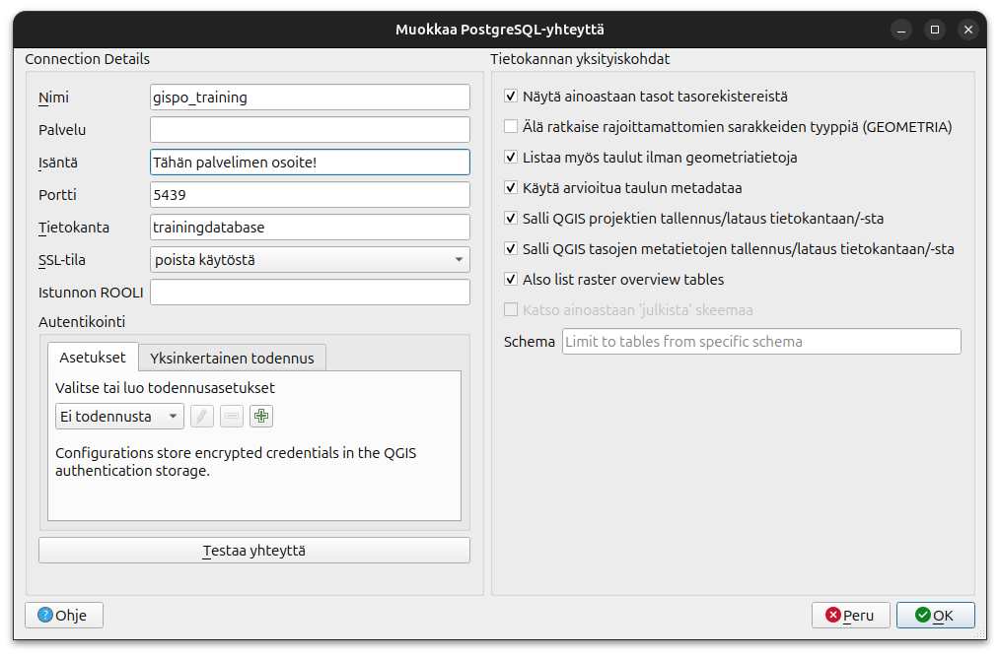
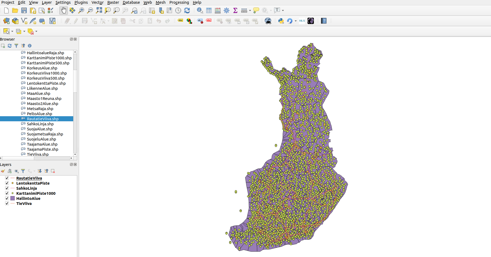
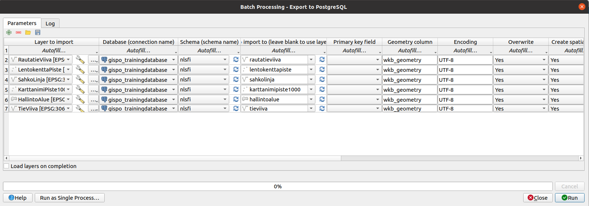

3 Harjoitus 2: Aineistojen lataaminen
Harjoituksen sisältö - Harjoituksessa ladataan paikkatietoaineistoja PostGIS- tietokantaan.
Harjoituksen tavoite - Harjoituksen jälkeen opiskelijalla on perustiedot paikkatietoaineistojen lataamiseen paikkatietokantaan.
3.0.1 Valmistautuminen
QGIS tulee olla asennettuna, jotta paikkatietoaineistoja voidaan ladata. Avaa myös pgAdmin selaimeen ja kirjaudu sisään. Avaa Query Tool (Valitse trainingdatabase -> Ylhäältä Tools -> Query Tool).
3.1 Harjoitus 2.1: Tekstitiedoston lataaminen
Monia pistemäisiä paikkatietoaineistoja on tallennettu CSV-tiedostoihin, jossa ne eivät varsinaisesti ole paikkatietomuodossa. Ensimmäisessä harjoituksessa ladataan globaali lentokenttiä kuvaava aineisto PostgreSQL-tietokantaan. Luodaan ensin harjoitustietokantaan taulu seuraavasti:
DROP TABLE IF EXISTS airports;
CREATE TABLE airports
(
id integer,
name text,
city text,
country text,
IATA_code char(3),
ICAO_code char(4),
latitude numeric,
longitude numeric,
altitude numeric,
timezone text,
dst text,
tz_zone text,
type text,
source text
);Kyseinen aineisto on ladattu valmiiksi OpenFlights.org-sivustolta päänäkymän data-kansioon.
Tarkastele miltä kyseinen aineisto näyttää kansiossa. Voit avata tiedoston selaimeen tästä linkistä.
Voit lukea CSV-tiedoston tiedot edellisessä vaiheessa luotuun tauluun seuravaalla komennolla:
COPY airports
FROM '/home/student/data/airports.dat'
WITH CSV;COPY-komento viittaa tiedostoon kovalevyllä ja lataa sen. COPY voi viitata CSV:n lisäksi myös esimerkiksi binääriformaatteihin tai tekstitiedostoihin.
Tarkista lopuksi, että tietokantataulussa on dataa.
SELECT *
FROM airports
LIMIT 10;Aineistoa tarkastelemalla nähdään, että taulussa on koordinaatteja, mutta ne on tallennettu vain numeroarvoina; ei paikkatietotyyppinä.
Jotta PostGIS:n toiminnallisuuksia voisi hyödyntää aineiston kanssa, tulee kyseiseen tauluun lisätä geometriasarake. PostGIS:ssä on valmis funktio tähän tarkoitukseen. Tarkastele dokumentaatiosta miten kyseistä funktiota käytetään.
SELECT AddGeometryColumn ('airports','geom',4326,'POINT',2);Tarkastele taulua uudelleen.
SELECT *
FROM airports
LIMIT 10;Tauluun on ilmestynyt uusi sarake. Sarake ei kuitenkaan sisällä vielä mitään tietoa. Päivitetään taulun sisältö UPDATE-komennon avulla.
Seuraavassa komennossa on ketjutettu useampi funktio sisäkkäin.
- ST_MakePoint luo tekstikenttien perusteella pistemuotoisen geometrian
- ST_SetSRID asettaa kyseiselle tietokentälle EPSG-koodin avulla koordinaattijärjestelmän
UPDATE airports
SET geom = ST_SetSRID(ST_MakePoint(longitude, latitude),4326);Tarkastele lopuksi aineistoa esimerkiksi pgAdminin karttatoiminnallisuuden avulla.

3.2 Harjoitus 2.2: Paikkatietoaineiston lataaminen
Maanmittauslaitoksen aineisto on ladattu valmiiksi harjoitussivun data-kansioon.
3.2.1 Vaihtoehto 1: QGISin tietokannan hallinnan avulla
QGIS-työpöytäohjelmisto tarjoaa erittäin kätevän graafisen käyttöliittymän paikkatietoaineistojen lataamiseksi PostGIS-tietokantaan. Useat QGISin eri työkalut mahdollistavat joustavan latauksen ja mahdolliset muokkaukset aineistoon jo ennen latausta.
Ensimmäisessä vaiheessa otetaan yhteys lokaalista QGIS-asennuksesta koulutuksessa käytettävään PostGIS-tietokantaan. Avaa tässä vaiheessa QGIS, jos et ole sitä jo tehnyt. Lisää uusi tietokantayhteys avaamalla QGISin tietolähteiden hallinta klikkaamalla Tasot > Tietolähteiden hallinta. Valitse Tietolähteiden hallinta -ikkunasta PostgreSQL-välilehti ja klikkaa Uusi-painiketta.
Syötä Yhteyden tiedot -ikkunaan seuraavat tiedot tietokantayhteyden määrittämiseksi:

Huomaa, että Name-kenttä kuvaa vain QGISiin tallennettavan yhteyden nimeä eikä itse tietokannan nimeä. Yhteyden valinnaisista toiminnallisuuksista kannattaa oletuksena valita kaikki, paitsi “Älä ratkaise rajoittamattomien sarakkeidein tyyppiä (GEOMETRIA)”. Jos se on päällä niin emme näe näkymää jota luodaan harjoituksessa 8. Esimerkiksi arvioidun metadatan käyttäminen nopeuttaa hakuja huomattavasti.
Paina Testaa yhteyttä -painiketta varmistaaksesi tietokantayhteyden toiminnan ja paina OK. QGISin sisällä voi myös ajaa SQL-komentoja esimerkiksi DB Managerin avulla.
Luo tässä vaiheessa trainingdatabase-tietokantaan uusi skeema, jonne Maanmittauslaitoksen aineistot tullaan lataamaan, ja anna skeemalle nimeksi “nlsfi”. Skeemojen avulla on helpompi pitää aineistot järjestyksessä. Uuden skeeman voi luoda pgAdminin graafisen käyttöliittymän kautta, QGISin kautta tai seuraavalla SQL-komennolla:
CREATE SCHEMA IF NOT EXISTS nlsfi;Jos et saa luomaasi skeemaa näkyviin QGISin puolella, aja seuraavat sql- komennot ja käynnistä QGIS-projekti uudelleen.
DROP TABLE IF EXISTS nlsfi.example;
CREATE TABLE nlsfi.example
(
id integer,
name text
);INSERT INTO nlsfi.example
VALUES (1, 'testi');Lataa data-kansio omalle koneellesi. Aineistoja voi lisätä navigoimalla Tasot > Lisää taso > Lisää vektoritaso, klikkaamalla Lisää vektoritaso -kuvaketta tasojen hallinnan työkalupalkista tai ihan vain raahaamalla tasoja suoraan Selain-ikkunasta Tasot-ikkunaan.
Lataa projektiisi ja tietokantaasi (ainakin) seuraavat aineistot:
- TieViiva.shp
- HallintoAlue.shp
- KarttanimiPiste1000.shp
- SahkoLinja.shp
- LentokenttaPiste.shp
- RautatieViiva.shp
Tarkista, että Koodaus-kohdassa on valittu UTF-8. Mikäli aineisto koodataan jollakin toisella järjestelmällä, ääkköset puuttuvat metatiedoista.
QGIS-projektiin avautuu vektoriaineistoja, johon on määritelty tietty koordinaattijärjestelmä. Tarkista, että koordinaattijärjestelmäksi on määritelty ETRS89 / TM35FIN(E,N) (EPSG:3067) tai EPSG:3047. Tason koordinaattijärjestelmän voit tarkistaa ja muuttaa klikkaamalla hiiren oikeaa painiketta tasolla ja valitsemalla Ominaisuudet > Lähde > Aseta koordinaattijärjestelmä. Kannattaa myös asettaa EPSG:3067 QGIS-projektin koordinaattijärjestelmäksi. Asettaminen tapahatuu QGIS ikkunan oikeassa alakulmassa.

Avaa QGISin prosessointityökaluista työkalu nimeltä Export to PostgreSQL. Avaa työkalun alapalkista Aja eräajona (Run as Batch Process), joka mahdollistaa useamman taulun ajamiseen tietokantaan kerralla. Muuta parametreja niin, että aineistot tulee ladattua oikeaan skeemaan ja tietokantaan. Täytä (Fill Down) -toimintoa käyttämällä sinun ei tarvitse klikkailla jokaisen tason kohdalta arvoja kuntoon. Lisää geometriasarakkeen nimeksi “wkb_geometry” ja, varmistaaksesi taulujen nimien kirjaantumisen pienillä kirjaimilla, avaa taulun nimen määrittävässä kohdassa lausekkeenmuodostaja ja kopioi siihen komento:
lower(layer_property( @INPUT, 'name'))Tarkista mitä muita parametrejä prosessi pitää sisällään. Voit kuitenkin jättää ne oletusarvoisiksi. Lopulta latausprosessisi pitäisi näyttää kutakuinkin tältä. Klikkaa Run!

Tarkista latauksen jälkeen, että aineistot ovat latautuneet. Tarkista virheilmoitukset ja korjaa latausta tarvittaessa.SELECT *
FROM nlsfi.tieviiva
LIMIT 10;3.2.2 Vaihtoehto 2: Komentorivin avulla
Luo tässä vaiheessa harjoitustietokantaan uusi skeema, jonne Maanmittauslaitoksen aineistot tullaan lataamaan, ja anna skeemalle nimeksi “nlsfi”. Skeemojen avulla on helpompi pitää aineistot järjestyksessä. Uuden skeeman voi luoda pgAdminin graafisen käyttöliittymän kautta tai seuraavalla SQL-komennolla:
CREATE SCHEMA IF NOT EXISTS nlsfi;Komentoriviltä tapahtuvaan lataamiseen käytetään shp2pgsql-ohjelmaa tai ogr2ogr-työkalua. Käynnistämällä ohjelman ilman parametrejä saat opasteen eri parametreistä. Tämän jälkeen voit ladata aineistoa äsken luotuun skeemaan ogr2ogr-työkalulla. Jos koneellasi on asennettu OSGeo4W-paketti (tulee QGIS:n asennuksen mukana), avaa käynnistysvalikosta OSGeo4W Shell ja anna seuraava komento:
ogr2ogr -f "PostgreSQL" PG:"host=<hostname> dbname=<dbname> user=<kayttaja> password=<salasana>" <dir>\tiedostonimi.shp -lco SCHEMA=nlsfiMuista tarkistaa, että aineiston hakemistopolku ja muut parametrit ovat kunnossa!
ogr2ogr-komennon käyttämät parametrit ovat:
-f output file format name
-lco layer creation optionMuita parametreja voit tutkia suorittamalla ogr2ogr-komennon ilman parametrejä. PostGIS-asennuksen yhteydessä usein asennettavalla shp2pgsql-työkalulla on myös mahdollista luoda shp-tiedostoista SQL-muotoisia lataustiedostoja. Komentorivityökalut mahdollistavat useamman tiedoston lataamisen tietokantaan kätevästi yhdellä kertaa. Esimerkiksi Windows-ympäristössä on mahdollista ladata kansiollisen gml-tiedostoja kerralla tietokantaan seuraavalla komennolla:
for %i in (*.gml) do ogr2ogr -update -append -f PostgreSQL PG:"host=<hostname> port=5432 dbname=<tietokantanimi> user=<kayttaja> password=<salasana> schemas=gml" %i